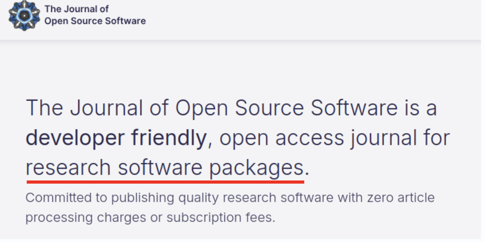

-Better software for Better research-
Introduction to the FAIR2 for Research Software training Programme
Who are we? The teams behind the programme
Research Software Engineering

The Research Software Engineering team is composed of 14 members and collaborates with researcher across the University in building research software. Areas of expertise within the group include: code optimisation and performance, reproducibility and embedding good software engineering practice with a project or team, developing computational workflows, GPU computing and Deep Learning, data science/visualisation, High Performance Computing, general software development, development of impact case studies, consultancy, training and education delivery and support.
Research is a continuous process
"The succession of researchers is comparable to a single person who learns indefinitely.
Pascal, Pensee, French Mathematician, Physicist, inventor, philosopher and theologian [1623-1662] 
- That’s very old….
- But still very valid…
- And becomes much more difficult with the
complexity of modern research
And that can be trusted…
- Research relies on the ability to trust what has been done before.
- This means that a result has been tested, verified and could be
reproduced➡️➡️ - Tools and methods used for a particular result are known and shared…
 The Turing Way project illustration by Scriberia. Used under a CC-BY 4.0 licence. DOI: 10.5281/zenodo.3332807
The Turing Way project illustration by Scriberia. Used under a CC-BY 4.0 licence. DOI: 10.5281/zenodo.3332807
What if a generation of research stop doing this?
- Tools and methods used for a particular results are
NOTknown and shared… - This means that a result can
NOTbe tested and verified and canNOTbe reproduced. - ➡️ It is harder to trust research
The Turing Way project illustration by Scriberia. Used under a CC-BY 4.0 licence. DOI: 10.5281/zenodo.3332807
The FAIR principles

The Turing Way project illustration by Scriberia. Used under a CC-BY 4.0 licence. DOI: 10.5281/zenodo.3332807
A guideline for those wishing to enhance the reusability of their data holdings
–Wilkinson et al. (2016)–
Barriers to FAIR24RS
- fear of prejudice
- important to create a positive culture
- fear of ‘theft’
- licensing and citation
- technical and time barriers
- support is available!
- only need to learn once
- non-commercialisable?
- open source and commercialisation are compatible
- greater impact through open source

Benefits of FAIR24RS

- Accelerate research
- Increase transparency of research
- Increase visibility, citation, reputation and impact
- Reduce duplication of effort
How to be FAIR?

FAIR4RS: Think about how you are coding…
- Where possible, make your code modular.
- Comment your code to make it as clear as possible.
- Create and provide tests that others can use.
- Follow code standards

FAIR4RS: Document your code!
A little poem from A beginner’s guide to writing documentation:
- If people don’t know why your project exists, they won’t use it.
- If people can’t figure out how to install your code, they won’t use it.
- If people can’t figure out how to use your code, they won’t use it.

FAIR4RS: Document your code!
A little poem from A beginner’s guide to writing documentation:
- If people don’t know why your project exists, they won’t use it.
- If people can’t figure out how to install your code, they won’t use it.
- If people can’t figure out how to use your code, they won’t use it.
In practice, Github can host documentation as website (and it is very easy to do!) ➡️➡️
FAIR4RS: Licence your code!
You need to tell people how they can re-use your code.
- GPLv3 The GNU General Public License: a free, copyleft license for software and other kinds of works. It is intended to guarantee your freedom to share and change all versions of a software to make sure it remains free software for all its users
- MIT licence: is a permissive free software license. Without limitation the rights to use, copy, modify, merge, publish, distribute, sublicense, and/or sell copies of the Software,

The licence must be made clear in the code repository and in the documentation
FAIR4RS: Share it!
- Create a description of your code with metadata [data about your software].
- Codemeta is a set of keywords used to describe code and how to structure them in a machine readable way
Examples:
- The citation.cff file contains metadata
- Description keywords
- Url to repository, to documentation
- List of contributors and affiliations
- etc…

FAIR4RS: Publish it!
Multiple journals accept publication that present software:
- Some are generalists (e.g. JOSS, JOSR)
- Some are domain specific (e.g. Astronomy and Computing)
For example, in JOSS, the review process is fully public and transparent. It is done entirely on github. The reviewer will actually really look at the code and the documentation.


The FAIR24RS Programme: Timeline

Thank you!